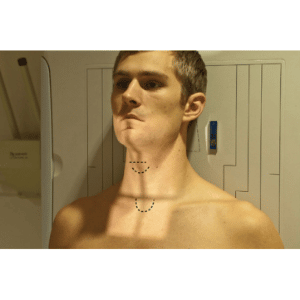
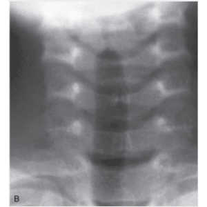
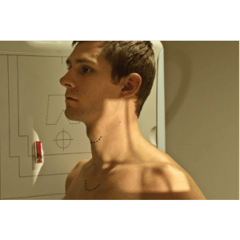
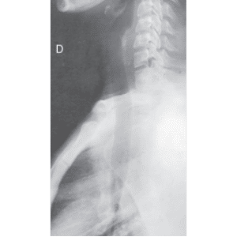

LARINGE E TRAQUÉIA - AP / Vias aéreas superiores
Paciente
Em ortostático; Em AP, PMS posicionado sobre a LCE, cervical em ligeira extensão, braços estendidos.
Chassis / Filme
18×24/ 24×30 longitudinal, posicionado em relação ao R.C.
Raio central
⊥ na horizontal, orientado 2 cm acima da incisura jugular.
DFF
1,00 m – com bucky.


Observação: Incidência realizada em inspiração.
LARINGE E TRAQUÉIA - PERFIL / vias aéreas superiores
Paciente
Em ortostático, ou sentado, lateralizado, cervical em ligeira extensão, braços estendidos.
Chassis / Filme
18×24 / 24×30 longitudinal, posicionado em relação ao RC.
Raio central
⊥ na horizontal, orientado ao nível do osso hióide.
DFF
1,00 m – com bucky.


Observação: Incidência realizada em inspiração.